Max is an aspiring computer scientist and a passionate PhD applicant to top programs in the USA. With a deep love for theoretical computer science, MAx aims to contribute to groundbreaking research that addresses pressing global challenges. As a freelancer and active science teacher, he brings a unique blend of industry and academic experiences, having worked on diverse projects ranging from front-end development to mentoring students in STEM. Max’s dedication to research has seen him participate in programs like the 2024 UIUC+ Summer Research Experience, where he honed his skills in software engineering and programming analysis. He aspires to leverage the rigorous training from his PhD journey to advance computer science and inspire the next generation of researchers in his home country, Nigeria, and beyond. Through his work, Kenneth envisions a future where computer science research becomes a powerful tool for solving real-world problems and fostering innovation. He also advocates for equitable access to education, especially in STEM fields, empowering others to pursue their dreams fearlessly.
READ MOREABOUT
LAYEFA MAX
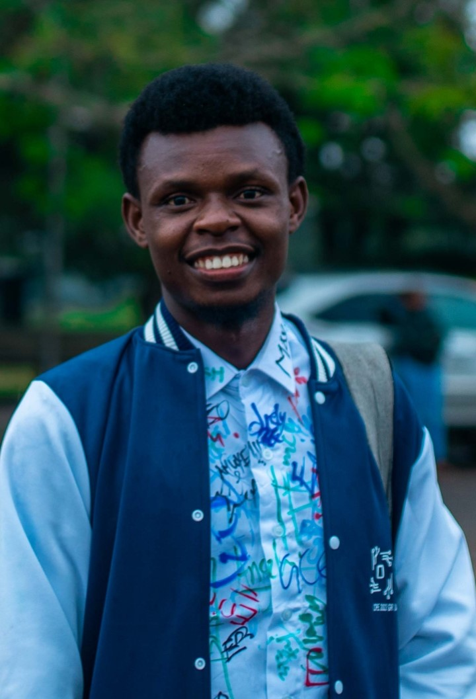
 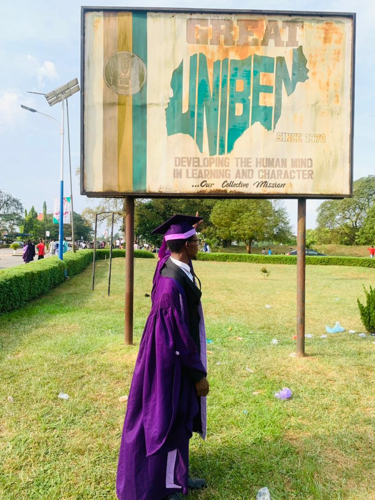
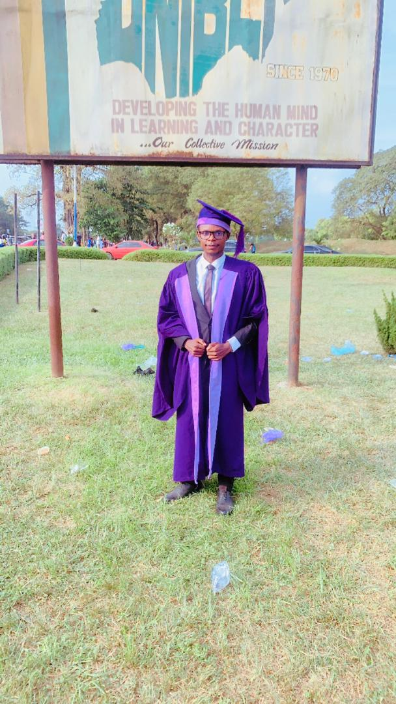
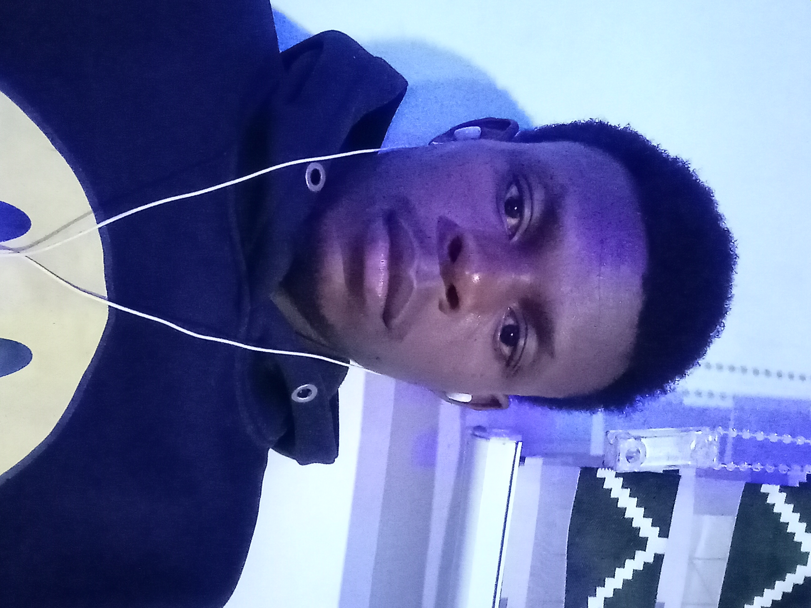
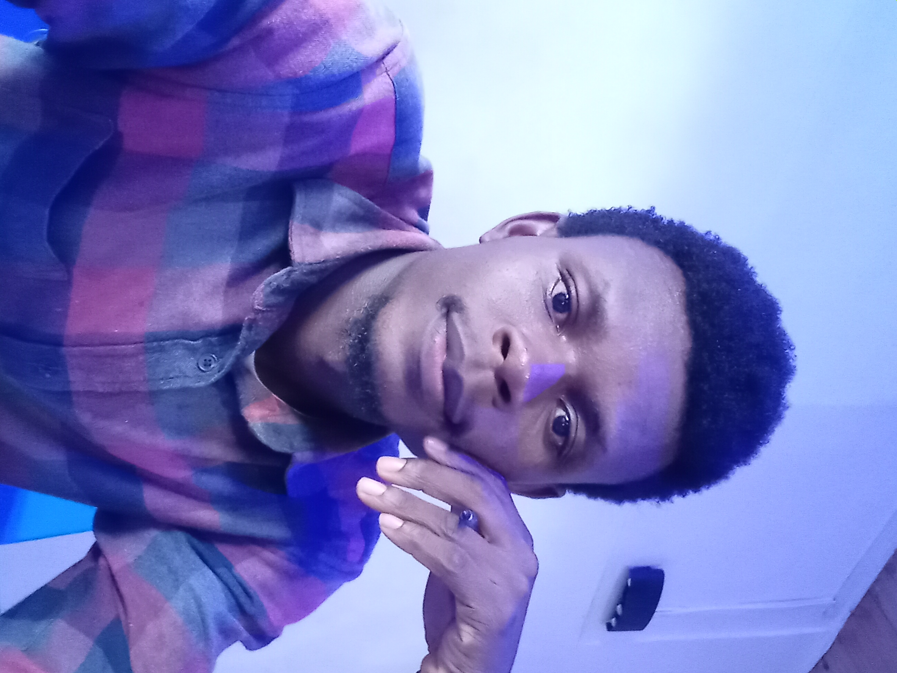
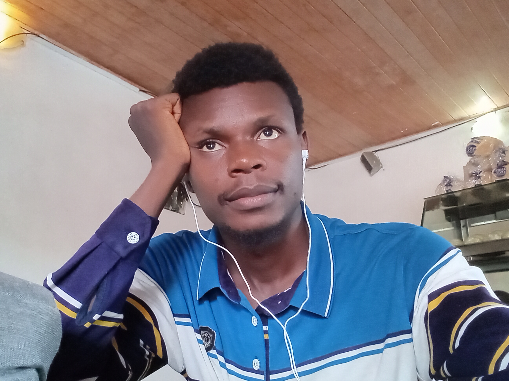
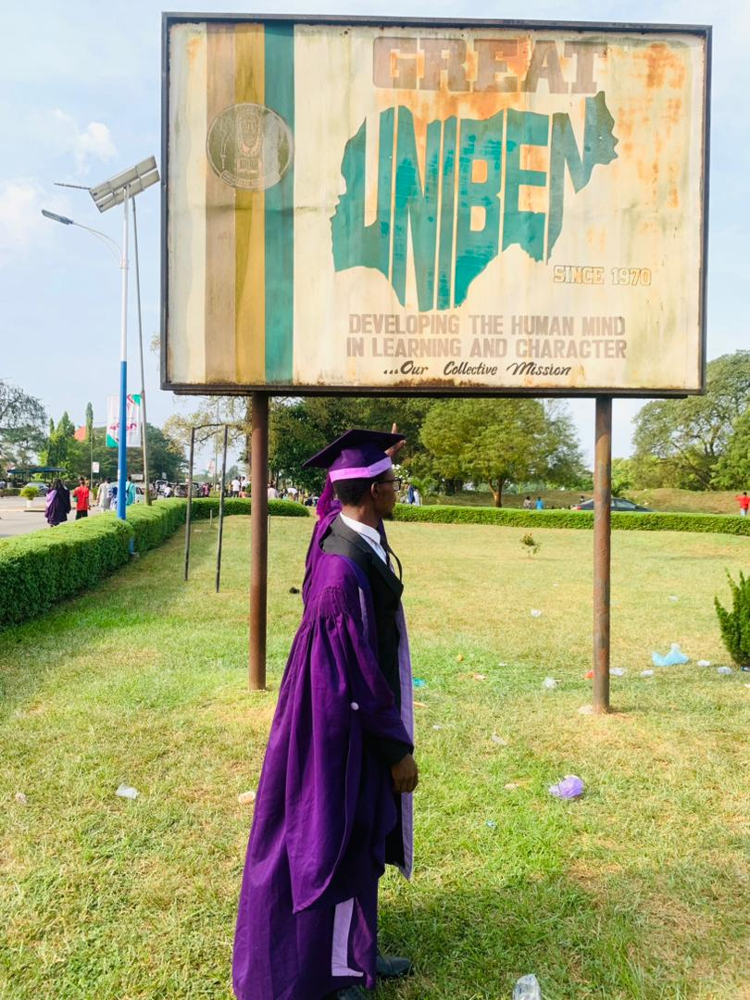
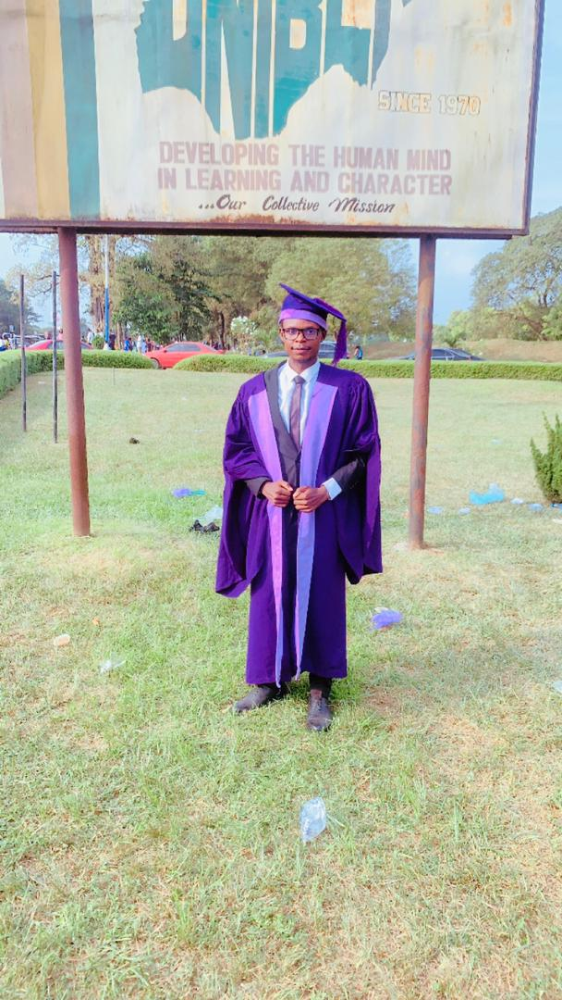
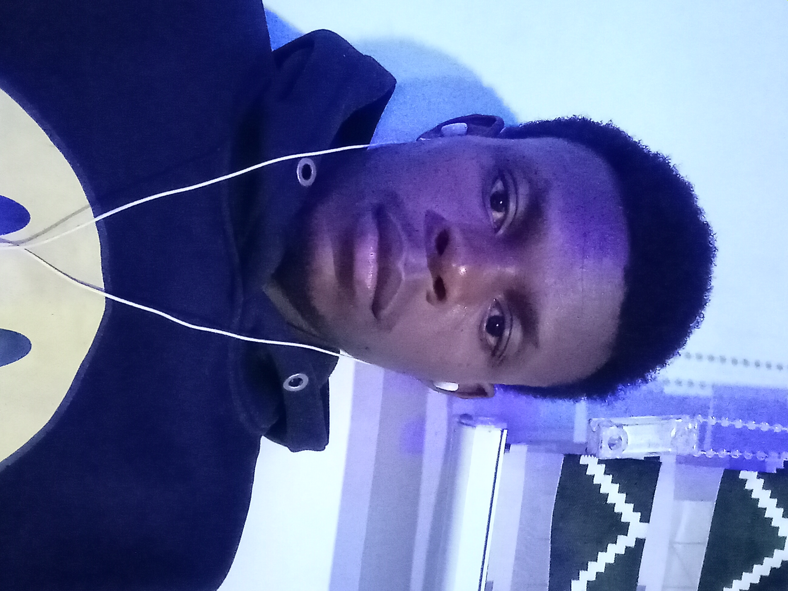
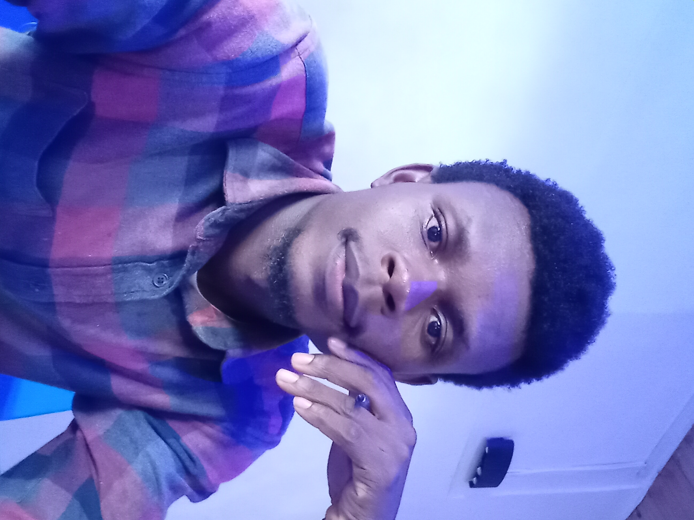
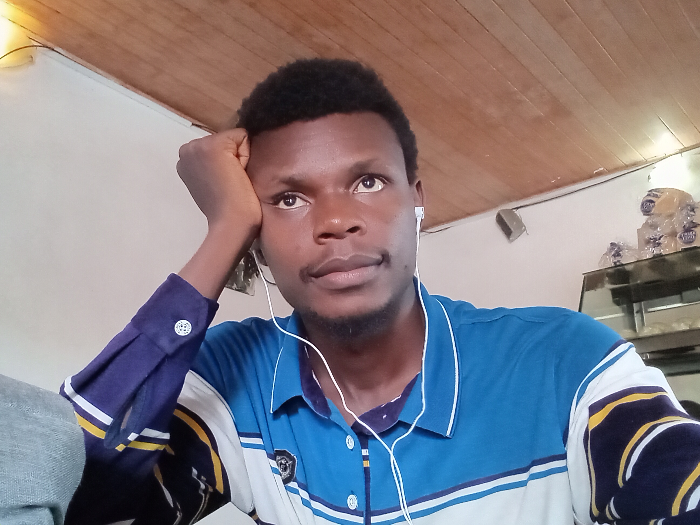